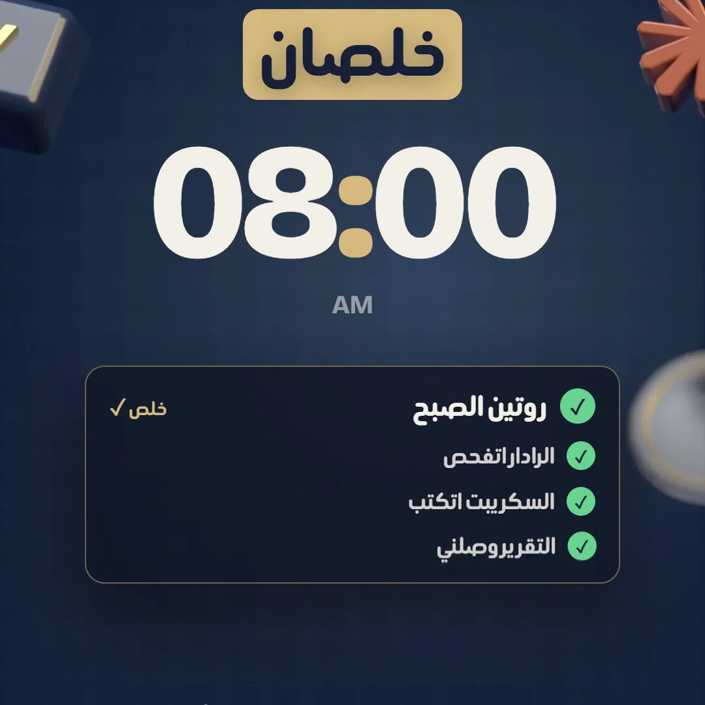
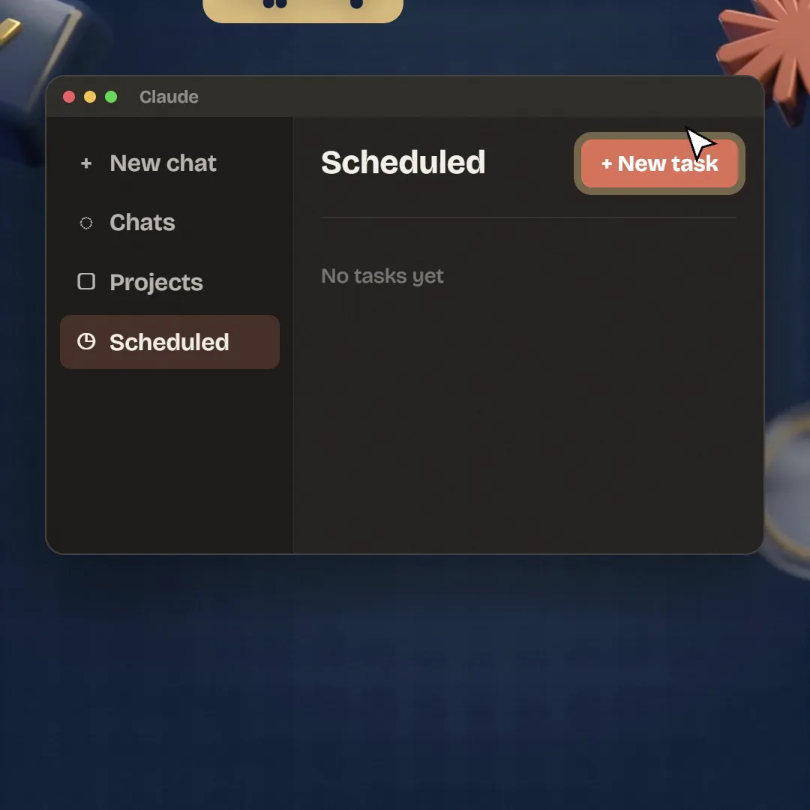
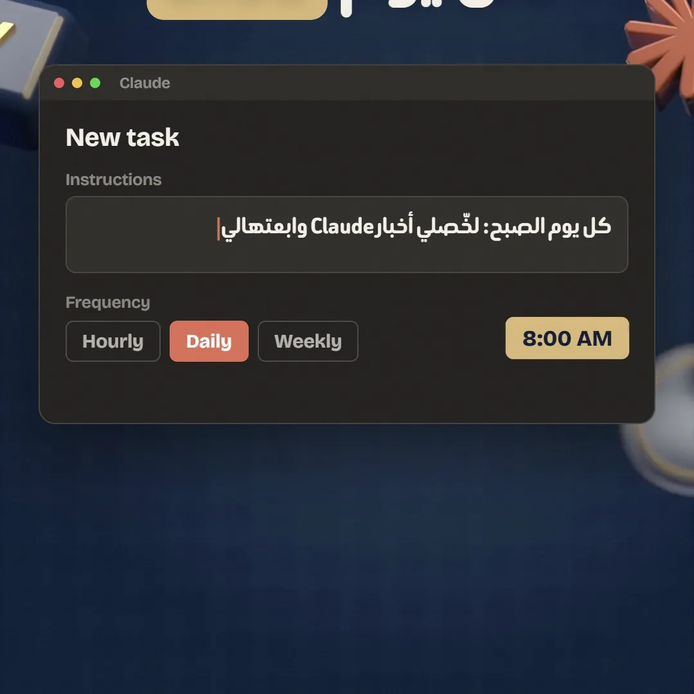
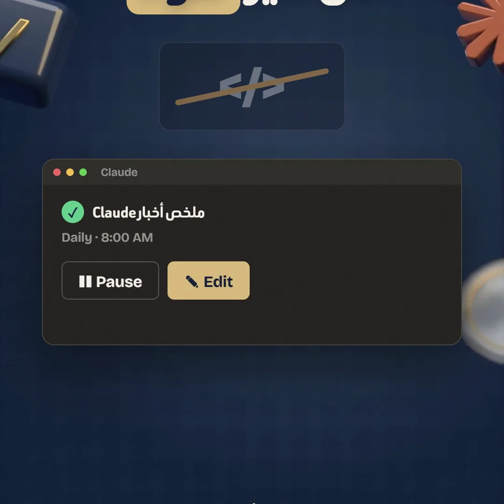
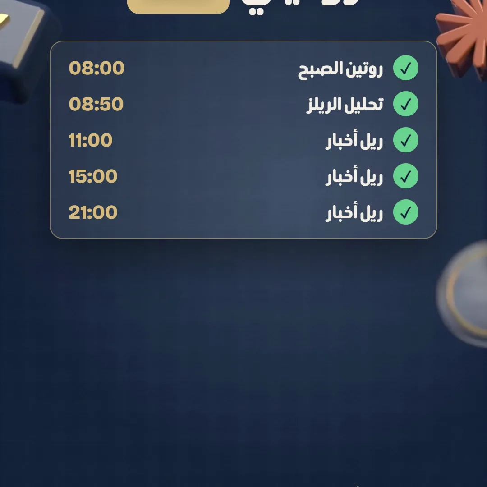

صحيت لقيتــهخلصـــان
المهام المجدولة في Claude: بتكتب الشغل اللي بتكرّره مرة واحدة، وتقول كل قد إيه، وClaude يعمله لوحده في ميعاده. أنا روتين الصبح بتاعي وريلز الأخبار كلها شغالة كده. دي الطريقة خطوة خطوة.


- 01
إيه اللي محتاجه
باقة مدفوعة من Claude (Pro أو Max أو Ultra أو Team أو Enterprise)، وتطبيق Claude Desktop على الكمبيوتر (Cowork أو تجربة Claude الجديدة). المهام المجدولة مش موجودة في الباقة المجانية.
Schedule recurring tasks in Claude Cowork (Anthropic) ↗
من الريل: روتين الصبح خلص لوحده الساعة 8 - 02
افتح Scheduled
في الشريط اللي على الجنب دوس «Scheduled»، وبعدين «New task» فوق على اليمين.

Scheduled على الجنب، وNew task فوق - 03
اكتب المطلوب والميعاد
عندك طريقتين: يا تقول لـ Claude المهمة وميعادها بكلامك (هو يسألك لو ناقصه حاجة وبعدين تأكّد)، يا تملا الخانات بنفسك: التعليمات، وكل قد إيه (كل ساعة، كل يوم، كل أسبوع…) والساعة.
كل يوم الساعة 8 الصبح: دوّر على أخبار Claude الجديدة من آخر 24 ساعة، ولخّصهالي في 5 نقط بالعامية، وكل نقطة معاها اللينك بتاعها.
التعليمات بكلامك، وDaily الساعة 8:00 - 04
وقّف أو عدّل وقت ما تحب
من صفحة المهمة تقدر تعدّل التعليمات أو الميعاد أو طريقة الموافقة، أو توقّفها مؤقتًا. ومن غير ولا سطر كود.

Pause وEdit في صفحة المهمة - 05
عشان تشتغل مضمون
سيب تطبيق Claude فاتح والجهاز صاحي في ميعاد المهمة (فيه إعداد في التطبيق يخلّي الجهاز صاحي). المصادر مختلفة هل بتشتغل والجهاز نايم ولا لأ، فالأضمن إنك تسيبه صاحي. ولو الجهاز نام والميعاد عدّى، ممكن المرة دي تتشال.
Desktop scheduled tasks (Claude docs) ↗ - 06
أفكار تجرّبها
ملخص إيميلاتك كل صبح، تقرير أرقام صفحتك كل أسبوع، أفكار ريلز من الترند كل يوم، أو مراجعة ملفات فولدر معيّن آخر الشهر. أنا عندي 5 مهام في اليوم: روتين الصبح 8:00، تحليل الريلز 8:50، وريل أخبار 11 و3 و9.

روتيني الحقيقي: 5 مهام بتشتغل لوحدها كل يوم
عايز حد يعملهولك؟
مش فاضي تتعلم وتعمل بنفسك؟ أنا بعمل ريلز لبراندك بنفس الطريقة اللي بشرحها هنا.